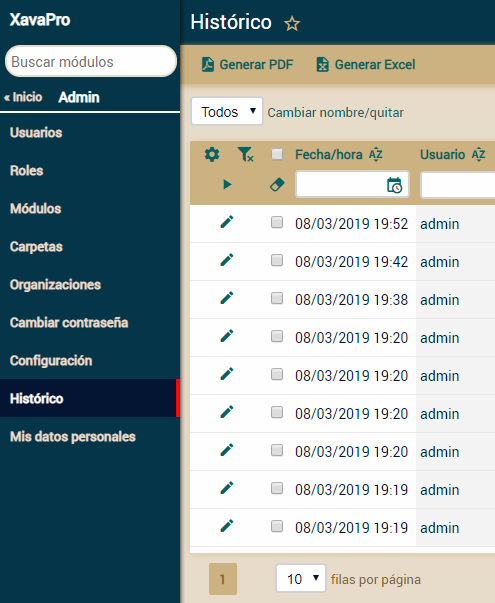
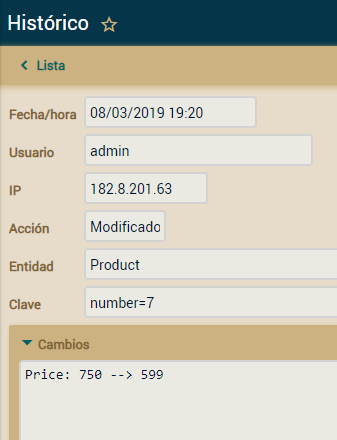

Histórico - Módulo de auditoría de cambios (nuevo en
v6.1)
Todas las funcionalidades en este artículo están disponible
solo en XavaPro
XavaPro cuenta con un mecanismo que registra todos los cambios hechos por
los usuarios a los datos, así como los acceso de lectura.
Histórico
La historia de cambios se puede ver usando el módulo
Histórico de
la carpeta
Admin:

Los datos que se registran son
fecha, hora, usuario, ip, acción, entidad, clave y cambios:

Activar Histórico
El módulo
Histórico está desactivado por defecto, para activarlo
has de añadir la siguiente entrada en el
xava.properties de tu
proyecto:
accessTrackerProvidersClasses=com.openxava.naviox.util.HistoryAccessTrackerProvider